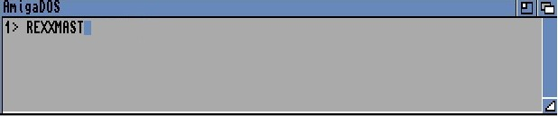
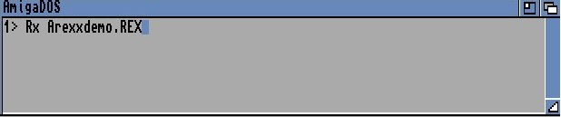

AREXX is a separate programming language which is included with Workbench 2. It has been carefully designed to make efficient use of the Amiga's powerful multi-tasking system. Please consult your AREXX documentation from Commodore concerning the intricacies of this language, this User Guide concerns AMOS Professional programming!. It will now be explained how AMOS Professional supports the AREXX system.
The Amiga is capable of running several different programs simultaneously. Each application can have its own memory area and separate screen window, so AMOS Professional is able to occupy your screen while a word-processor or communications package is working diligently in the background. If there is enough memory available, you may run as many programs as you like, and flick between them instantly.
AREXX allows you to achieve much more! It provides a standard communication facility between the various programs running on an Amiga, so if an event like an E-mail message happens, it can be displayed directly from AMOS Professional.
It is also possible to run one program from another by remote control. For example, a specialist word-processor could be called from AMOS Professional, and the current program listing could be passed over for immediate editing. The edited listing could then be re-loaded into AMOS Professional and tested on screen, in one operation.
In order to fully exploit these features, a lot of memory and a fast hard disc is required. Unexpanded machines will be unable to make use of these features.
AMOS Professional has an advanced internal control system, and a small AMOS Professional program is needed to serve as an intermediary to an AREXX-compatible editor. The AMOS Professional program can now be run as an Editor Accessory, and external commands can be translated into the appropriate ASK EDITOR and CALL EDITOR instructions.
AREXX can be called in several ways. To install it from AMOS Professional, an EXEC command can be used, as follows:
X> Exec "RexxMast"
The EXEC instruction calls up the resident MASTER process, and loads it into memory permanently. Naturally, this can only work if AREXX has been installed onto the appropriate hard disc system. Please check your Workbench 2 manual for the required procedure.
Alternatively, AREXX can be run from the CLI prompt with a REXXMAST command. This command can be inserted into your start-up sequence, so that it is run automatically whenever your Amiga is used. AREXX will now be available from your applications.
It is important to realise that not all programs can make use of the AREXX interface, and the relevant documentation should be checked before proceeding. Here is the general procedure.
Firstly, open a CLI and type:
A welcome message should appear. Now enter the AMOS Professional environment and run a program containing some AREXX-compatible commands. Finally, press[Amiga] + [A] and run the program from the CLI prompt. This program could be an external application such as CED, or a purpose-built routine written in the AREXX programming language.
This example would run an AREXX program called Arexxdemo.REX:
When you return to AMOS Professional, you will be able to communicate with the external program using the commands that are ,detailed below.
instruction: open an AREXX communication port
Arexx Open "PORT_NAME"
The AREXX OPEN instruction sets up an AREXX communication port, ready for immediate use. Before opening this channel, AREXX must be installed in memory using the REXXMAST command. If you are in any doubt as to the current availability of AREXX, its status can be checked by the AREXX EXIST function, explained below.
"PORT NAME" refers to the name of the communications port to be opened, and it should be in upper case. The name should be less than 32 characters long, and AMOS Professional will ignore any characters with an Ascii code below 32.
Before the port is opened, AMOS Professional opens the "rexxsyslib.library" file from the libs: folder, which should be installed on your hard disc. The selected port is then checked for possible problems, and if it is already opened, an error will be generated and the program aborted.
instruction: close a communications port
Arexx Close
Use this command to close an open AREXX communications port. If a message has been received via the port, but is waiting for a response, a "Message not answered" error will be generated. If you then leave the AMOS Professional program without responding, the port will be closed with an error code of 20, which is fatal! Please see below, for a further explanation of these error code values
.function: check availability of a communications port
value=Arexx Exist("PORT_NAME")
This function checks for the presence of the named communications port in the Amiga's
memory.
A value of -1 (True) means that it is available, whereas zero (False) indicates that there is a
problem.
AREXX EXIST can also be used to check if the AREXX system has been installed. Whenever AREXX is activated, it opens up two communications ports "AREXX" and "REXX", so the following example can be used for a test:
E> If Arexx Exist("REXX")=0
Trap Exec "RexxMast" : Rem Load AREXX and trap an error
If Arexx Exist ("REXX")=0
Print "Sorry, AREXX cannot be opened!"
Endif
Endif
instruction: wait for a message from an AREXX program
Arexx Wait
This command halts an AMOS Professional program until a message arrives from an AREXX program. This operation can be aborted at any time as usual, by pressing [Ctrl]+[C] to return to the AMOS Professional Editor.
function: check for a message from an AREXX program
status=Arexx
The AREXX function performs a GET MESSAGE command from the Amiga's operating system.
There are three possible values that can be returned, depending on the message status, as follows:
Zero indicates that there is no message, so try again later. A value of 1 means that a message has just arrived, but does not need a response. 2 indicates that a message has been received which must be answered immediately with an appropriate return string. This function can be used in a loop, as an alternative to the AREXX WAIT command. For example:
X> Do
If Arexx
Print "A message is waiting!"
Endif
Multi Wait
Loop
function: get a message from an AREXX program
message$=Arexx$(message number)
After a message has been successfully received from an AREXX compatible program, this function can be used to read its contents.
The number refers to the number of the message you wish to read, ranging from zero to 15. If it is not included, an empty string will be returned.
instruction: answer a message from an AREXX program
Arexx Answer error value
Arexx Answer error value,return$
Normally, when a message arrives from an AREXX program, it must be answered without delay. This command sends back a response to the calling program, with the special result fields set to the appropriate values. Typical values are:
0 No error 5 Warning 10 Severe error 20 Fatal error
If the AREXX program requests a return string, one must be sent back, otherwise the calling program will be left in limbo awaiting a response. This situation should be checked with the AREXX function, as explained above, and a return value of 2 means that a reply must be given immediately.
The AMOS Professional message system is intelligent, so if you attempt to return a string to an AREXX program which does not specifically request one, it will not be transmitted. Similarly, if the AREXX program is waiting for a string, but it is accidentally omitted from the instruction, an empty string will be sent by AMOS Professional automatically.